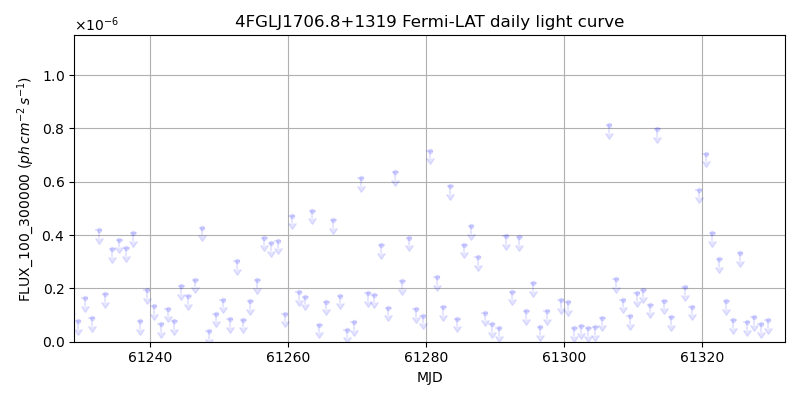
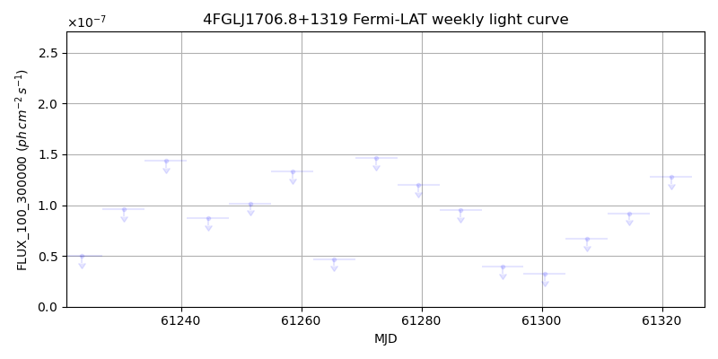
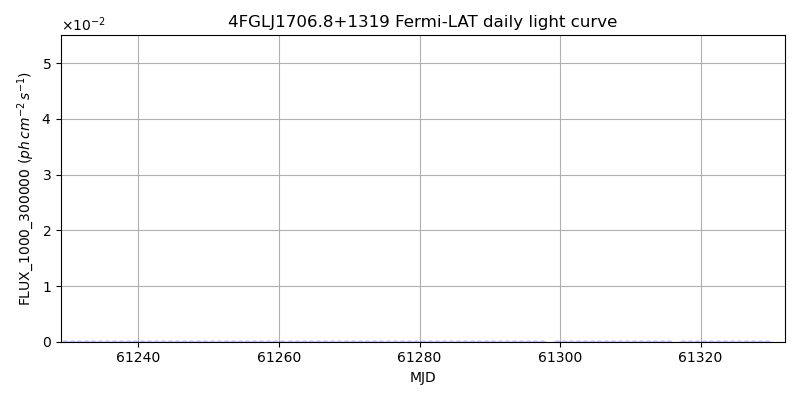
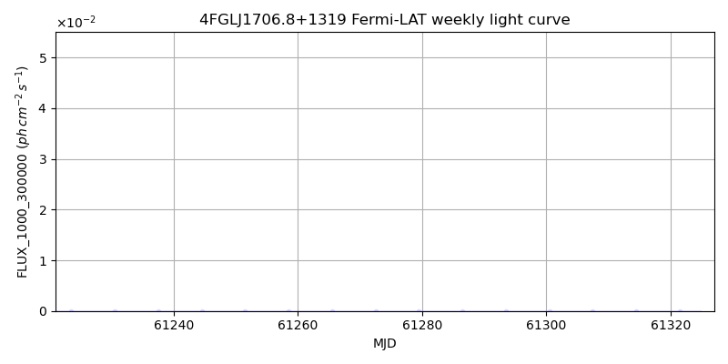

LAT Lightcurve site: https://fermi.gsfc.nasa.gov/ssc/data/access/lat/msl_lc/source/4FGL_J1706d8p1319
NED: Query
Time of last update of this page: UT: 2026-10-17 15:23 (MJD: 61330.641)
| Property | Value |
|---|---|
| R.A. | 17:06:52.80 |
| Dec. | 13:19:48.0 |
| z | 0.000 |
| 3FGL SpectrumType | |
| 3FGL PL Index | -1.00 |
| 3FGL Flux_100_300000 | -1.00e+00 |
| 3FGL Flux_1000_300000 | -1.00e+00 |
| 3FGL Flux >200 GeV | -1.00e+00 |
| 3FGL Extrap. Crab >200 GeV | -1.00 |
| 3FGL Flux After EBL Absorption >200GeV | -1.00e+00 |
| 3FGL EBL Crab Fraction >200GeV | -1.00 |

| MJD | dMJD | Flux | dFlux | Frac3FGL | FracCrab>200GeV | EBLFracCrab>200GeV |
|---|---|---|---|---|---|---|
| 61325.50 | 0.50 | 3.33e-07 | 0.00e+00 | 0.00 | 0.00 | -0.00 |
| 61326.50 | 0.50 | 7.34e-08 | 0.00e+00 | 0.00 | 0.00 | -0.00 |
| 61327.50 | 0.50 | 9.22e-08 | 0.00e+00 | 0.00 | 0.00 | -0.00 |
| 61328.50 | 0.50 | 6.64e-08 | 0.00e+00 | 0.00 | 0.00 | -0.00 |
| 61329.50 | 0.50 | 8.11e-08 | 0.00e+00 | 0.00 | 0.00 | -0.00 |

| MJD | dMJD | Flux | dFlux | Frac3FGL | FracCrab>200GeV | EBLFracCrab>200GeV |
|---|---|---|---|---|---|---|
| 61293.50 | 3.50 | 3.93e-08 | 0.00e+00 | 0.00 | 0.00 | -0.00 |
| 61300.50 | 3.50 | 3.24e-08 | 0.00e+00 | 0.00 | 0.00 | -0.00 |
| 61307.50 | 3.50 | 6.68e-08 | 0.00e+00 | 0.00 | 0.00 | -0.00 |
| 61314.50 | 3.50 | 9.19e-08 | 0.00e+00 | 0.00 | 0.00 | -0.00 |
| 61321.50 | 3.50 | 1.28e-07 | 0.00e+00 | 0.00 | 0.00 | -0.00 |

| MJD | dMJD | Flux | dFlux | Frac3FGL | FracCrab>200GeV | EBLFracCrab>200GeV |
|---|---|---|---|---|---|---|
| 61325.50 | 0.50 | 1.36e-08 | 0.00e+00 | 0.00 | 0.00 | -0.00 |
| 61326.50 | 0.50 | 1.40e-08 | 0.00e+00 | 0.00 | 0.00 | -0.00 |
| 61327.50 | 0.50 | 1.29e-08 | 0.00e+00 | 0.00 | 0.00 | -0.00 |
| 61328.50 | 0.50 | 9.97e-09 | 0.00e+00 | 0.00 | 0.00 | -0.00 |
| 61329.50 | 0.50 | 4.16e-08 | 0.00e+00 | 0.00 | 0.00 | -0.00 |

| MJD | dMJD | Flux | dFlux | Frac3FGL | FracCrab>200GeV | EBLFracCrab>200GeV |
|---|---|---|---|---|---|---|
| 61293.50 | 3.50 | 6.90e-09 | 0.00e+00 | 0.00 | 0.00 | -0.00 |
| 61300.50 | 3.50 | 2.14e-09 | 0.00e+00 | 0.00 | 0.00 | -0.00 |
| 61307.50 | 3.50 | 4.21e-09 | 0.00e+00 | 0.00 | 0.00 | -0.00 |
| 61314.50 | 3.50 | 8.29e-09 | 0.00e+00 | 0.00 | 0.00 | -0.00 |
| 61321.50 | 3.50 | 2.16e-09 | 0.00e+00 | 0.00 | 0.00 | -0.00 |
--------------------------------------------------------- Using user-supplied coords: 17:06:52.80 13:19:48.0 2000 --------------------------------------------------------- FLWO UT night of: 2026-10-18 Local Sid. @ Midnight: 01:23 Sunset (-15.0) (local, UT): 18:56 01:56 Sunrise (-15.0) (local, UT): 05:22 12:22 Moonrise (local, UT): Moonset (local, UT): 22:59 05:59 Moon phase: 0.47 --------------------------------------------------------- AzTime LSID UT Obj_el Obj_az Mn_el Mn_az Sep. --------------------------------------------------------- 18:56 20:18 01:56 42.8 258.3 30.5 195.3 50.9 19:26 20:48 02:26 36.4 263.1 28.5 202.5 50.9 19:56 21:18 02:56 30.1 267.4 25.9 209.3 51.0 20:26 21:48 03:26 23.7 271.4 22.6 215.6 51.0 20:56 22:19 03:56 17.3 275.2 18.8 221.3 51.1 21:26 22:49 04:26 11.0 279.0 14.5 226.6 51.2 21:56 23:19 04:56 4.8 282.8 9.9 231.4 51.2 22:26 23:49 05:26 -0.8 286.7 5.0 235.7 51.3 22:56 00:19 05:56 -7.6 290.8 0.2 239.8 51.4 23:26 00:49 06:26 -13.5 295.2 -5.5 243.5 51.5 23:56 01:19 06:56 -19.2 300.1 -11.3 247.0 51.6 00:26 01:49 07:26 -24.6 305.4 -17.0 250.4 51.7 00:56 02:19 07:56 -29.6 311.4 -22.8 253.6 51.8 01:26 02:49 08:26 -34.1 318.1 -28.7 256.7 51.9 01:56 03:19 08:56 -38.1 325.8 -34.7 259.8 52.1 02:26 03:49 09:26 -41.3 334.3 -40.7 263.0 52.2 02:56 04:20 09:56 -43.6 343.8 -46.8 266.4 52.4 03:26 04:50 10:26 -44.8 353.8 -52.8 270.1 52.5 03:56 05:20 10:56 -44.9 4.2 -58.9 274.3 52.7 04:26 05:50 11:26 -43.9 14.3 -64.9 279.6 52.9 04:56 06:20 11:56 -41.8 23.9 -70.8 287.0 53.1 05:22 06:46 12:22 -39.2 31.5 -75.7 297.1 53.3 --------------------------------------------------------- Dark hours >55 deg.: 0.00